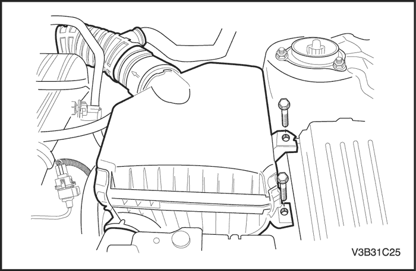
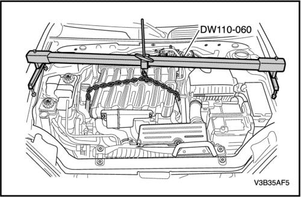
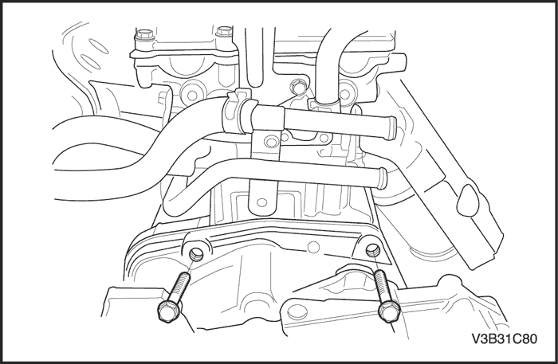
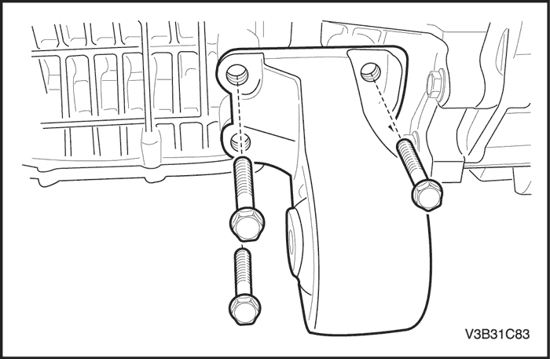

MANTENIMIENTO Y REPARACIÓN
servicio con vehículo en marcha


Cambio del líquido de la transmisión
Procedimiento de desmontaje
- Levante el vehículo.
- Quite el tapón de drenaje y vacíe el aceite. Deje que pasen 5 minutos para que el líquido e vacíe totalmente.
procedimiento de montaje
- Ponga el tapón de drenaje.
Apretar
Apriete el tapón de drenaje a 12 N•m (106 lb-pulg).
- Añada el líquido de transmisión al transeje a través de tapón de llenado.
- Realice la comprobación del líquido de la transmisión. Consulte "Comprobación del líquido de transmisión" en esta sección.

Palanca de control del cambios
Procedimiento de desmontaje
- Ponga el freno de estacionamiento.
- Mueva la palanca de control del cambio hacia atrás hasta una de las posiciones de velocidades bajas.
- Quite los dos tornillos.
- Quite el pomo de la palanca de control de cambios.
procedimiento de montaje
- Monte el pomo y los tornillos en la palanca de control de cambios.
Apretar
Apriete los tornillos del pomo de control de cambios 2 N•m (18 lb-pulg.).
- Ponga la palanca de mando del cambio en la posición PARK.

Conjunto de palanca de control de cambios
Procedimiento de desmontaje
- Desconecte el cable negativo de la batería.
- Desmonte la consola del piso. Consulte la Sección 9G, Guarnecido interior.
- Desenchufe los conectores eléctricos.
- Desmonte el clip (1) de fijación del cable de control y el cable de control de cambios (2) del conjunto de la palanca de control de cambios.

- Quite los tornillos de fijación del conjunto de la palanca de mando del cambio de marchas y el conjunto de la palanca.
procedimiento de montaje
- Monte los tornillos de fijación del conjunto de la palanca de control de cambios.
Apretar
Apriete los tornillos de fijación del conjunto de la palanca de mando del cambio de marchas hasta 8 N•m (71 lb-pulg.).
- Coloque el cable (2) en el conjunto de la palanca de control de cambios y fije el cable con un nuevo clip de retención(1).
- Ajuste el cable. Consulte el apartado ""Ajuste del cable de mando del cambio de marchas" " de esta sección.
- Enchufe los conectores eléctricos del cableado.
- Monte la consola del piso. Consulte la Sección 9G, Guarnecido interior.
- Conecte el cable negativo de la batería.

Palanca selectora de gama de la caja de cambios automática
Procedimiento de desmontaje
- Ponga el freno de estacionamiento y calce las ruedas.
- Retire el manguito de entrada del filtro del aire y el tubo de toma.
- Desconecte el cable de control de cambios de la palanca selectora de gama.
- Desmonte la tuerca de la palanca selectora y la palanca.
procedimiento de montaje
- Instale la palanca y la tuerca de la palanca selectora.
Apretar
Apriete la tuerca de la palanca selectora a 15 N•m (11 lb-pie).
- Conecte el cable de control de cambios a la palanca selectora de gama.
- Instale el manguito de entrada del filtro del aire y el tubo de toma.

Soporte del cable de control de cambios
Procedimiento de desmontaje
- Desmonte la carcasa del filtro de aire.
- Desconecte el cable de control de cambios de la palanca selectora de la transmisión y del soporte del cable de control. Consulte el apartado ""Cable de mando del cambio de marchas"" de esta sección.
- Quite los tornillos del soporte del cable de control de cambios y el soporte.

procedimiento de montaje
- Instale los tornillos del soporte del cable de control de cambios y el soporte.
Apretar
Apriete los tornillos del soporte del cable de control de cambios a 25 N•m (18 lb-pie).
- Conecte el cable de control de cambios a la palanca selectora de la transmisión y al soporte del cable de control. Consulte el apartado ""Cable de mando del cambio de marchas"" de esta sección.
- Monte la carcasa del filtro de aire.
Ajuste del cable de control de cambios
procedimiento de ajuste
- Mueva la palanca de control de cambio hasta la posición N - punto muerto.
Importante: El cable de control de cambios debe desconectarse de la palanca selectora de la caja de cambios antes de desconectarlo del soporte del cable de control. De lo contrario, podrían provocarse daños en la palanca de cambios manual, lo que supondría el desmontaje de la caja de cambios.
- Desconecte el cable de control de cambios de la palanca selectora de la transmisión.
- Desconecte el cable de control de cambio del soporte del cable de control presionando las lengüetas de los clips retenedores del cable de control y tirando de ellas hacia fuera. Deseche el clip.

- Libere el bloqueo de ajuste del conjunto del cable de control de cambio.
- Deslice la lengüeta negra hacia atrás.

- Inserte un destornillador en la ranura por debajo de la lengüeta blanca y tire hacia arriba de la misma.
- Monte el cable de mando del cambio dentro del soporte del cable de control del cambio de marchas. Fije con un nuevo clip de fijación del cable de control de cambios. Se escuchará un chasquido al insertar de forma adecuada.
- Con la palanca selectora de la transmisión en posición de punto muerto (N), ajuste el extremo del cable en el espárrago esférico de la palanca de cambios. Se escuchará un chasquido al insertar de forma adecuada.

- Bloquee la lengüeta de ajuste del cable de control.
- Presione hacia abajo la lengüeta blanca para fijar en su posición.

- Deslice la lengüeta negra sobre la blanca para bloquear en su posición.
- Verifique su correcto funcionamiento.

Cable de control de cambios
Procedimiento de desmontaje
- Desmonte la carcasa del filtro de aire.
- Desmonte la consola del piso. Consulte la Sección 9G, Guarnecido interior.
- Ponga el freno de estacionamiento.
- Coloque la palanca de control de cambios en la posición N.
- Desmonte el clip (1) de fijación del cable de control y el cable (2) del conjunto de la palanca de control de cambios.
Importante: El cable de control de cambios debe desconectarse de la palanca selectora de la caja de cambios antes de desconectarlo del soporte del cable de control. De lo contrario, podrían provocarse daños en la palanca de cambios manual, lo que supondría el desmontaje de la caja de cambios.
- Desconecte el cable de control de cambios de la palanca selectora de la transmisión.
- Desconecte el cable de control de cambio del soporte del cable de control presionando las lengüetas de los clips retenedores del cable de control y tirando de ellas hacia fuera. Deseche el clip.

- Desconecte el cable de control del cambio del panel del salpicadero.
- Retire el cable de mando del vehículo.
procedimiento de montaje
- Coloque el cable de control de cambios en el soporte del cable.
- Fije el cable en el soporte con un nuevo clip de fijación de cable de control. Se escuchará un chasquido al insertar de forma adecuada.
- Con la palanca selectora en posición de punto muerto (N), coloque el extremo del cable de control en el espárrago esférico de la palanca de cambios. Se escuchará un chasquido al insertar el cable de forma adecuada.
- Fije el pasacables del cable de control de cambios presionando el cable en el orificio pasante del panel del salpicadero.
- Asegúrese de que la palanca de control de cambios se encuentra en la posición de punto muerto (N).
- Conecte el cable de mando al conjunto de la palanca de mando del cambio de marchas. Fije el cable con un nuevo clip de fijación del cable de control de cambios(1).
- Instale el cable de control de cambios (2) en el conjunto de la palanca de control de cambios.
- Ajuste el cable de mando del cambio de marchas Consulte el apartado ""Ajuste del cable de mando del cambio de marchas" " de esta sección.
- Monte la consola delantera del piso. Consulte la Sección 9G, Guarnecido interior.
- Monte la carcasa del filtro de aire.
Palanca de retención del cambio manual y conjunto de interruptor de posición del eje
Herramientas necesarias
Instalador del pasador del eje manual J 41229
Procedimiento de desmontaje
- Desmonte la palanca selectora de gama de la transmisión automática Consulte "Palanca selectora de gama de la caja de cambios automática" de esta sección.
- Desmonte el conjunto del cuerpo de la válvula de control. Consulte "Conjunto del cuerpo de la válvula de control" en esta sección.

- Desmonte el conjunto del muelle de la palanca de retención del eje manual y el tornillo.

Aviso: Deseche el pasador. No es reutilizable.
- Retire el pasador del eje del cambio manual (2) con un extractor de clavos pequeño.
- Desmonte el pasador del cubo de la palanca de retención del eje manual (1) con una palanqueta y unos alicates.
- Separe el eje manual (3) del conjunto de la palanca de retención del cambio manual (4). No retire el eje manual (3) de la caja de la transmisión.
Importante: No saque el extremo de la varilla del actuador de estacionamiento más allá de la superficie mecanizada del conducto del aceite de la caja. No será posible seleccionar Estacionamiento si el conjunto del trinquete de estacionamiento se extrae demasiado de la caja de cambios y la varilla del actuador se desengancha del trinquete de estacionamiento.
- Desmonte el conjunto de la palanca de retención del cambio manual (4) de la caja de cambios después de desconectarlo cuidadosamente del conjunto del actuador (5).

procedimiento de montaje
- Conecte el conjunto de la palanca de retención del eje manual (2) al conjunto del actuador (1) e instálelo en la carcasa.
- Coloque el eje manual (3) en el conjunto de la palanca de retención del cambio manual (2).
- Instale el pasador del cubo de la palanca de retención del eje manual (4) a la altura de (b) 7,9 mm (0,38 pulg.)
Importante: Utilice J 41229 para instalar el pasador del eje del cambio manual a la altura correcta para fijar debidamente el eje manual. Si se introduce el pasador demasiado, puede agrietarse la camisa de la caja.
Aviso: Utilice un pasador nuevo para garantizar un enganche adecuado con la caja. Compruebe que la altura de instalación del pasador del eje del cambio manual (a) es de entre 7,2 y 8,2 mm (0,28 y 0,32 pulg.)
- Instale el pasador del eje del cambio manual (5).
- Instale el conjunto del muelle de la palanca de retención del eje manual y el tornillo.
Apretar
Apriete el tornillo del muelle de retención manual del eje a 12 N•m (106 lb-pulg.).
- Gire el interruptor para comprobar si está bien instalado.
- Monte el conjunto del cuerpo de la válvula de control. Consulte "Conjunto del cuerpo de la válvula de control" en esta sección.
- Instale la palanca selectora de gama de la caja de cambios automática. Consulte "Palanca selectora de gama de la caja de cambios automática" de esta sección.

Junta del eje del cambio manual
Herramientas necesarias
Extractor de juntas J 45201
DT 49101 Instalador de juntas
Procedimiento de desmontaje
- Desmonte la palanca de retención del eje manual y el conjunto de interruptor de posición del eje. Consulte "Palanca de retención del cambio manual y conjunto de interruptor de posición del eje" de esta sección.
- Utilice el J 45201 para retirar la junta del eje del cambio manual y evitar dañar la superficie de la caja.

procedimiento de montaje
Importante: Lubrique el eje con ATF para evitar dañar la junta del eje del cambio manual.
- Instale la palanca de retención del eje manual y el conjunto de interruptores de posición del eje. Consulte "Palanca de retención del cambio manual y conjunto de interruptor de posición del eje" de esta sección.
- Utilice el DT 49101 para instalar la junta del eje del cambio manual.

Conjunto de la línea de refrigerante de aceite
Procedimiento de desmontaje
- Desmonte la batería y la bandeja. Consulte Sección 1E1, Sistema eléctrico del motor o la Sección 1E2, Sistema eléctrico del motor - 2.0 Diesel.
- Desmonte la carcasa del filtro de aire.
- Retire los tornillos (1,2) del conducto del tubo del refrigerante de aceite del transeje.
- Quite el tornillo (3) del soporte de apoyo del tubo refrigerante de aceite.

- Levante y apoye el vehículo adecuadamente.
- Coloque un cárter de vaciado y un recipiente adecuado debajo del vehículo.
- Desconecte los manguitos del lado del radiador.
- Desconecte el conjunto de la línea del refrigerador de aceite.
procedimiento de montaje
- Instale el conjunto de la línea del refrigerador de aceite en la caja de cambios.
- Conecte los manguitos al lado del radiador.
- Coloque el tornillo (3) del soporte de apoyo del tubo refrigerante de aceite.
Apretar
Apriete el tornillo del soporte de apoyo del tubo refrigerante de aceite a 10 N•m (89 lb-pulg.).
- Coloque los tornillos (1,2) del conducto del tubo del refrigerante de aceite en el transeje.
Apretar
Apriete los tornillos del conducto del tubo refrigerante de aceite a 20 N•m (15 lb-pie).
- Monte la carcasa del filtro de aire.
- Monte la batería y la bandeja. Consulte Sección 1E1, Sistema eléctrico del motor o la Sección 1E2, Sistema eléctrico del motor - 2.0 Diesel.
- Compruebe el nivel de aceite. Consulte "Comprobación del líquido del transeje" de esta sección.

Junta de aceite del eje de accionamiento de las ruedas delanteras
Herramientas necesarias
Extractor de juntas universal J 23129
Mazo de deslizamiento J 6125-1B
Mango del botador J-8092
Instalador de juntas de eje DT 47790
Procedimiento de desmontaje
- Levante el vehículo.
- Desmonte el árbol de transmisión. Consulte Sección 3A, Árbol de transmisión de la caja de cambios automática.
- Utilice el J 23129 y el J 6125-1B para retirar la junta de aceite del eje de accionamiento de las ruedas delanteras izquierda o derecha.

procedimiento de montaje
- Utilice el DT 47790 y J 8092 para instalar la junta de aceite del eje de accionamiento a las ruedas delanteras izquierda o derecha.
- Monte el árbol de transmisión. Consulte Sección 3A, Árbol de transmisión de la caja de cambios automática.
Tapa del cuerpo de la válvula de control
Procedimiento de desmontaje
- Desmonte la batería y la bandeja. Consulte Sección 1E1, Sistema eléctrico del motor o la Sección 1E2, Sistema eléctrico del motor - 2.0 Diesel.
- Levante y sujete el vehículo.
- Desmonte la tapa inferior del motor izquierdo. Consulte la sección 9N, Bastidor y bajos de la carrocería.
- Vacíe el líquido de la transmisión. Consulte "Cambio del líquido de transmisión" de esta sección.

- Desconecte el conector eléctrico del módulo de control de la transmisión (TCM) del cuerpo de la válvula de control.
- Desconecte los dos manguitos del refrigerador de aceite del radiador y colóquelos a un lado.
- SOLO para vehículos 2.0S Diesel, drene el refrigerante del motor. Consulte Sección 1D2, Refrigeración del motor-2.0 Diesel.
- SOLO para vehículos 2.0S Diesel, desconecte los manguitos del radiador próximos a la tapa para facilitar el desmontaje de la tapa del cuerpo de la válvula.

- Retire los tornillos de la tapa del cuerpo de la válvula de control (1).
- Retire la tapa del cuerpo de la válvula de control (2).
Aviso: Deseche la junta. No es reutilizable.
- Retire la junta de la tapa del cuerpo de la válvula de control (3).
Aviso: Sujete el conjunto de válvulas solenoide de control cuando retire la junta. Si tira demasiado fuerte puede dañar las conexiones eléctricas internas.
Aviso: Deseche la junta. No es reutilizable.
- Retire la junta del orificio del conector del cableado de la tapa del cuerpo de la válvula de control (4).
- Retire los restos del material de junta viejo. Limpie las superficies de la caja de cambios y las juntas de la tapa del cuerpo de la válvula de control.

procedimiento de montaje
- Instale la junta del orificio del conector del cableado de la tapa del cuerpo de la válvula de control (1).
Aviso: No reutilice la junta de la tapa del cuerpo de la válvula.
- Monte la junta de la tapa del cuerpo de la válvula de control (2) en la tapa del cuerpo de la válvula de control.
- Instale la tapa del cuerpo de la válvula de control (3).
Importante: Instale a mano los tornillos de la tapa del cuerpo de la válvula de control y a continuación, todos los tornillos en la secuencia apropiada.
- Instale los tornillos de la tapa del cuerpo de la válvula de control (4).
Apretar
Apriete los tornillos de la tapa del cuerpo de la válvula de control a 12 N•m (106 lb-pulg.) en la secuencia apropiada.
- Conecte el conector eléctrico del módulo de control de la transmisión (TCM) del cuerpo de la válvula de control.
- Conecte los dos manguitos del refrigerante de aceite.
- SOLO para vehículos 2.0S Diesel, conecte los manguitos del radiador próximos a la tapa.
- SOLO para vehículos 2.0S Diesel, llene el depósito de refrigerante del motor. Consulte Sección 1D2, Refrigeración del motor-2.0 Diesel.
- Monte la tapa inferior izquierda del motor. Consulte la sección 9N, Bastidor y bajos de la carrocería.
- Monte la batería y la bandeja. Consulte Sección 1E1, Sistema eléctrico del motor o la Sección 1E2, Sistema eléctrico del motor - 2.0 Diesel.
- Llene el depósito del líquido de la transmisión. Consulte "Cambio del líquido de transmisión" de esta sección.
- Compruebe si hay fugas.

Conjunto del módulo de control de la transmisión y la válvula solenoide de control
Procedimiento de desmontaje
- Retire la tapa del cuerpo de la válvula de control. Consulte "Tapa del cuerpo de la válvula de control" de esta sección.
- Desconecte el conector eléctrico del interruptor de posición de cambio (1).
- Desconecte el conector eléctrico del sensor de velocidad de salida (2).
- Desconecte el conector eléctrico del sensor de velocidad de entrada (3).

- Retire los tornillos del cuerpo de la válvula de control (1) M5 x 40,5.
- Retire los tornillos del cuerpo de la válvula de control (2) M6 x 97.
- Retire el conjunto(3) del módulo de control de la transmisión (TCM) y el cuerpo de la válvula solenoide de control.
Aviso: Extreme las precauciones al desmontar o instalar el plato del filtro. Si falta una lengüeta de retención o está rota, es posible que no se pueda sujetar correctamente el plato del filtro al conjunto de válvulas solenoide de control y ello puede provocar daños o contaminación.
Aviso: Deseche el plato del filtro. No es reutilizable. Compruebe si las juntas del interruptor de presión están dañadas o contaminadas. Sustituya el conjunto de válvulas solenoide de control según convenga.
- Retire el plato del filtro del conjunto de válvulas solenoide de control (4).

procedimiento de montaje
Aviso: Extreme las precauciones al desmontar o instalar el plato del filtro. Si falta una lengüeta de retención o está rota, es posible que no se pueda sujetar correctamente el plato del filtro al conjunto de válvulas solenoide de control y ello puede provocar daños o contaminación.
- Instale un NUEVO plato del filtro del conjunto de válvulas solenoide de control (1) para evitar que haya fugas de líquido a través de las juntas de líquido.
- Instale el conjunto del TCM y del cuerpo de válvulas solenoide de control (2).
Importante: Coloque todos lo tornillos antes de apretarlos. A continuación apriételos en la secuencia especificada.
- Instale los tornillos del cuerpo de la válvula de control (3) M5 x 40,5 y los tornillos del cuerpo de la válvula de control (4) M6 x 97.
Apretar
Apriete los tornillos del cuerpo de la válvula de control (3) M5 x 40,5 a 8 N·m (71 lb-pulg.) y los tornillos del cuerpo de la válvula de control (4) M6 x 97 a 12 N•m (106 lb-pulg.) en la secuencia apropiada.
- Conecte el conector eléctrico del sensor de velocidad de entrada (3).
- Conecte el conector eléctrico del sensor de la velocidad de salida (2).
- Conecte el conector eléctrico del interruptor de posición de cambio (1).
- Instale la tapa del cuerpo de la válvula de control. Consulte "Tapa del cuerpo de la válvula de control" de esta sección.
Importante: No conduzca el vehículo antes de finalizar la reprogramación.
- Reprograme el TCM con la calibración correcta.
Importante: Después de reparar la transmisión interna o sustituir piezas internas, debe realizar el procedimiento de adaptaciones de aprendizaje rápido de servicio.
- Realice el procedimiento de adaptaciones de aprendizaje rápido de servicio. Consulte "Adaptaciones de aprendizaje rápido de servicio" de esta sección.
Conjunto del cuerpo de la válvula de control
Procedimiento de desmontaje
- Retire el conjunto del módulo de control de la transmisión (TCM) y el cuerpo de válvulas solenoide de control. Consulte "Conjunto del módulo de control de la transmisión (TCM) y el cuerpo de válvulas solenoide de control" en esta sección.

- Retire el soporte de la válvula solenoide de control (9).
- Retire la junta de la válvula de control del nivel de líquido (2) y la válvula (1).
- Retire los tornillos del cuerpo de la válvula de control (3) M6 x 60.
- Retire los tornillos del cuerpo de la válvula de control (4) M6 x 53.
- Desmonte el conjunto del cuerpo de la válvula de control (5).
- Desmonte el conjunto del plato del separador del cuerpo de la válvula de control (6).
Importante: El conducto del líquido del embrague no es reutilizable.
- Desmonte la junta del conducto de líquido del embrague de 1ª,2ª,3ª,4ª (7) y la junta del conducto del embrague de marchas cortas/marcha atrás (8).

procedimiento de montaje
Importante: El conducto del líquido del embrague no es reutilizable.
- Instale una junta del conducto del líquido del embrague de 1ª,2ª,3ª,4ª (1) NUEVA y una junta del conducto del embrague de marchas cortas/marcha atrás (2) NUEVA.
- Monte el conjunto del plato del separador del cuerpo de la válvula de control (3) en el conjunto del cuerpo de la válvula.
Importante: Alinee la válvula manual (a) con el conjunto de la palanca de retención mientras instala el conjunto del cuerpo de la válvula de control.
- Monte el conjunto del cuerpo de la válvula de control (4).

Importante: Coloque todos lo tornillos antes de apretarlos. A continuación apriételos en la secuencia especificada.
- Instale los tornillos del cuerpo de la válvula de control (5) M6 x 60 y los tornillos del cuerpo de la válvula de control (6) M6 x 53.
Apretar
Apriete los tornillos del cuerpo de la válvula de control (5) M6 x 60 y los tornillos del cuerpo de la válvula de control (6) M6 x 53 a 12 N•m (106 lb-pulg.) en la secuencia apropiada.
- Instale la junta de la válvula de control del nivel de líquido (7) y la válvula (8).
- Instale el soporte de la válvula solenoide de control (9).
- Instale el conjunto del módulo de control de la transmisión (TCM) y el cuerpo de la válvula solenoide de control. Consulte "Conjunto del módulo de control de la transmisión (TCM) y el cuerpo de válvulas solenoide de control" en esta sección.

Sensor de velocidad de salida
Procedimiento de desmontaje
- Desmonte el conjunto del cuerpo de la válvula de control. Consulte "Conjunto del cuerpo de la válvula de control" en esta sección.
- Retire el tornillo del sensor de velocidad de salida y el sensor.
procedimiento de montaje
- Instale el sensor de velocidad de salida con su tornillo.
Apretar
Apriete el tornillo de fijación del sensor de velocidad de salida hasta 12 N•m (106 lb-pulg.).
- Monte el conjunto del cuerpo de la válvula de control. Consulte "Conjunto del cuerpo de la válvula de control" en esta sección.

Sensor de velocidad de entrada
Procedimiento de desmontaje
Importante: Comprima las lengüetas de bloqueo en el tañon para liberarlo de la caja y evitar dañar los retenedores.
- Desmonte el conjunto del cuerpo de la válvula de control. Consulte "Conjunto del cuerpo de la válvula de control" en esta sección.
- Quite el tornillo del sensor de velocidad de entrada.
- Retire el sensor y las juntas.
procedimiento de montaje
Aviso: Deseche las juntas. No pueden volver a utilizarse.
- Instale el sensor de velocidad de entrada, el tornillo y las nuevas juntas.
Apretar
Apriete el tornillo de fijación del sensor de velocidad de entrada hasta 12 N•m (106 lb-pulg.).
- Monte el conjunto del cuerpo de la válvula de control. Consulte "Conjunto del cuerpo de la válvula de control" en esta sección.

Soporte de montaje del transeje izquierdo
Herramientas necesarias
Fijación del soporte del motor DW110-060
Procedimiento de desmontaje
- Desmonte la carcasa del filtro de aire.
- Instale la DW110-060.
- Apoye la caja de cambios sobre un gato de soporte.

- Quite los cuatro tornillos del soporte de fijación del transeje del lado izquierdo.
- Quite el tornillo y la tuerca de la caja de soporte de fijación de la caja de cambios.
- Desmonte el soporte de fijación izquierdo de la caja de cambios.
procedimiento de montaje
- Instale el soporte de fijación del transeje izquierdo y coloque los cuatro tornillos del soporte de fijación.
Apretar
Apriete los cuatro tornillos del soporte de fijación del lado izquierdo a 40 N•m (30 lb-pie).
- Coloque los tornillos y la tuerca de la jaula del soporte de fijación de la caja de cambios.
Apretar
Apriete el tornillo y la tuerca de la jaula del soporte de fijación de la caja de cambios hasta 65 N•m (48 lb-pie).
- Desmonte la DW110-060.
- Monte la carcasa del filtro de aire.
Conjunto de transeje
Herramientas necesarias
Fijación del soporte del motor DW110-060
Procedimiento de desmontaje
- Desmonte la batería y la bandeja. Consulte la Sección 1E1, Sistema eléctrico del motor o la Sección 1E2, Sistema eléctrico del motor - 2.0 Diesel.
- Vacíe el líquido de la transmisión. Consulte el apartado "Procedimiento de sustitución del aceite de la caja de cambios" de esta sección.
- Desmonte la carcasa del filtro de aire.
- Desmonte el soporte del ECM. Consulte la Sección 1F1, Controles del motor o la Sección 1F2, Controles del motor - 2.0 Diesel.
- Desconecte el cable de control de cambios del transeje. Consulte el apartado ""Cable de mando del cambio de marchas"" de esta sección.
- Desconecte el conector eléctrico del módulo de control de la transmisión (TCM) del cuerpo de la válvula de control.

- Quite los dos tornillos superiores de sujeción de la caja de cambios al motor.
- Desmonte el motor de arranque. Consulte la Sección 1E1, Sistema eléctrico del motor o la Sección 1E2, Sistema eléctrico del motor - 2.0 Diesel.
- Instale la DW110-060.
- Levante y apoye el vehículo adecuadamente.
- Desmonte la cubierta inferior del motor. Consulte la sección 9N, Bastidor y bajos de la carrocería.

- Desmonte el larguero central. Consulte la Sección 2C, Suspensión delantera.
- Desmonte la barra de impacto. Consulte la Sección 2C, Suspensión delantera.
- Desmonte el tubo de escape delantero. Consulte la Sección 1G1, Sistema de escape del motor o la Sección 1G2, Sistema de escape del motor - 2.0 Diesel.

- Desmonte el soporte del casquillo del amortiguador delantero.
- Desmonte el árbol de transmisión. Consulte la Sección 3A, Árbol de transmisión de la caja de cambios automática.
- Desmonte el conducto del refrigerante de aceite. Consulte el apartado "Conjunto de la línea del refrigerador de aceite" de esta sección.

- Quite los tornillos que unen el convertidor de par al volante motor. En caso de 2.0S Diesel, quite los tornillos después de retirar la tapa de plástico.
Aviso: Motor Diesel (seis tornillos del convertidor de par), Motor XK (tres tornillos del convertidor de par).

- Quite los tornillos del soporte de fijación trasero de la caja de cambios.

- Soporte el conjunto de la caja de cambios utilizando el gato de apoyo.

- Quite los tornillos que unen la brida del cárter del aceite a la caja de cambios.

- Quite los tornillos inferiores izquierdos que unen el motor a la caja de cambios, en el lado del soporte de fijación trasero de la caja de cambios.

- Quite los tornillos inferiores derechos que unen el motor y la caja de cambios, en el lado del soporte del casquillo del amortiguador delantero.
- Quite los tornillos del soporte de fijación izquierdo de la caja de cambios. Consulte el apartado "Soporte de fijación izquierdo de la caja de cambios" de esta sección.
- Desmonte el conjunto de la caja de cambios con cuidado.
procedimiento de montaje
- Instale la caja de cambios en el vehículo y apoye el conjunto de la caja de cambios utilizando el gato de apoyo.
- Coloque los tornillos del soporte de fijación izquierdos de la caja de cambios. Consulte el apartado "Soporte de fijación izquierdo de la caja de cambios" de esta sección.
- Coloque los tornillos inferiores derechos que unen el motor y la caja de cambios, en el lado del soporte del casquillo del amortiguador delantero.
Apretar
Apriete los tornillos inferiores de fijación del motor a la caja de cambios hasta 75 N•m (55 lb-pie).
- Coloque los tornillos inferiores izquierdos que unen el motor a la caja de cambios, en el lado del soporte de fijación trasero de la caja de cambios.
Apretar
Apriete los tornillos inferiores izquierdos del motor a la caja de cambios hasta 75 N•m (55 lb-pie).
- Coloque los tornillos que unen la brida del cárter del aceite a la caja de cambios.
Apretar
-
- Si se trata de un motor XK6, apriete los tornillos de fijación de la brida del cárter del aceite a la caja de cambios hasta 30 N•m (22 lb-pie).
- Si se trata de un motor 2.0 Diesel, apriete los tornillos de fijación de la brida del cárter del aceite a la caja de cambios hasta 50 N•m (37 lb-pie).
- Coloque los tornillos del soporte de fijación trasero de la caja de cambios.
Apretar
-
- Si se trata de un motor XK6, apriete del soporte de fijación trasero de la caja de cambios hasta 65 N•m (48 lb-pie).
- Si se trata de un motor 2.0 Diesel, apriete del soporte de fijación trasero de la caja de cambios hasta 90 N•m (66 lb-pie).
- Coloque los seis tornillos que unen el convertidor de par al volante motor.
Apretar
-
- Apriete los tornillos del convertidor de par al volante motor hasta 45 N•m (33 lb-pie).
- En caso de 2.0S Diesel, coloque los tornillos y la tapa de plástico.
Aviso: Motor Diesel (seis tornillos del convertidor de par), Motor XK (tres tornillos del convertidor de par).
- Monte los tornillos superiores de fijación de la caja de cambios al motor.
Apretar
Apriete los tornillos superiores de fijación de la caja de cambios al motor hasta 75 N•m (55 lb-pie).
- Coloque el conducto del refrigerante de aceite. Consulte el apartado "Conjunto de la línea del refrigerador de aceite" de esta sección.
- Monte el motor de arranque. Consulte la Sección 1E1, Sistema eléctrico del motor o la Sección 1E2, Sistema eléctrico del motor - 2.0 Diesel.
- Coloque los tornillos del soporte del casquillo del amortiguador delantero y el soporte.
Apretar
Apriete los tornillos del soporte del amortiguador delantero hasta 65 N•m (48 lb-pie).
- Monte el árbol de transmisión. Consulte la Sección 3A, Árbol de transmisión de la caja de cambios automática.
- Monte el tubo de escape delantero. Consulte la Sección 1G1, Sistema de escape del motor o la Sección 1G2, Sistema de escape del motor - 2.0 Diesel.
- Monte la barra de impacto. Consulte la Sección 2C, Suspensión delantera.
- Monte el larguero central. Consulte la Sección 2C, Suspensión delantera.
- Monte la cubierta inferior del motor. Consulte la sección 9N, Bastidor y bajos de la carrocería.
- Baje el vehículo.
- Desmonte la DW110-060 del motor.
- Conecte el conector eléctrico del módulo de control de la transmisión (TCM) del cuerpo de la válvula de control.
- Conecte el cable de mando en la caja de cambios. Consulte el apartado ""Cable de mando del cambio de marchas"" de esta sección.
- Ajuste el cable de mando del cambio de marchas Consulte el apartado ""Ajuste del cable de mando del cambio de marchas" " de esta sección.
- Instale el soporte del ECM. Consulte la Sección 1F1, Controles del motor o la Sección 1F2, Controles del motor - 2.0 Diesel.
- Monte la carcasa del filtro de aire.
- Desmonte la batería y la bandeja. Consulte la Sección 1E1, Sistema eléctrico del motor o la Sección 1E2, Sistema eléctrico del motor - 2.0 Diesel.
- Añada líquido en la caja de cambios.
- Compruebe el nivel de aceite. Consulte "Comprobación del líquido de transmisión" en esta sección.
Importante: No conduzca el vehículo antes de finalizar la reprogramación.
- Reprograme el TCM con la calibración correcta.
Importante: Después de reparar la transmisión interna o sustituir piezas internas, debe realizar el procedimiento de adaptaciones de aprendizaje rápido de servicio.
- Realice el procedimiento de adaptaciones de aprendizaje rápido de servicio. Consulte "Adaptaciones de aprendizaje rápido de servicio" de esta sección.
- Efectúe una prueba en carretera del vehículo.
 |
|
 |
|
| © Copyright Chevrolet Europe. Reservados todos los derechos |